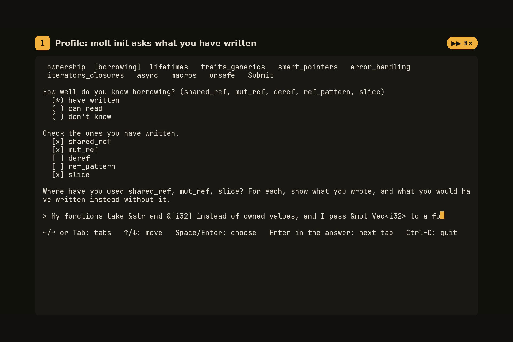
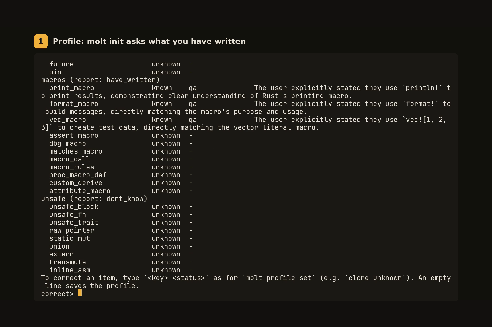
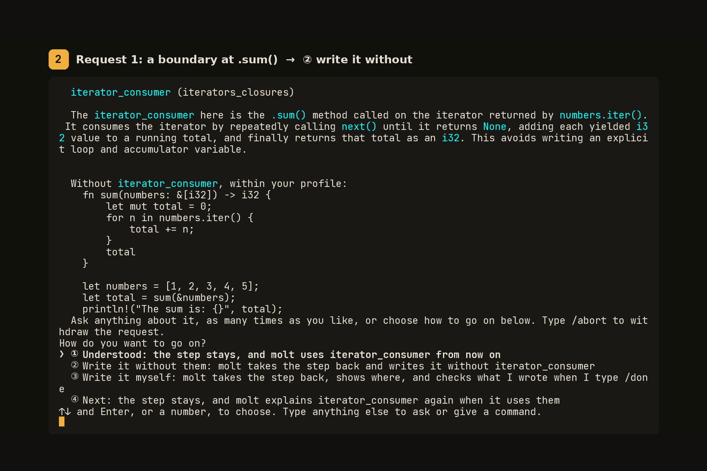
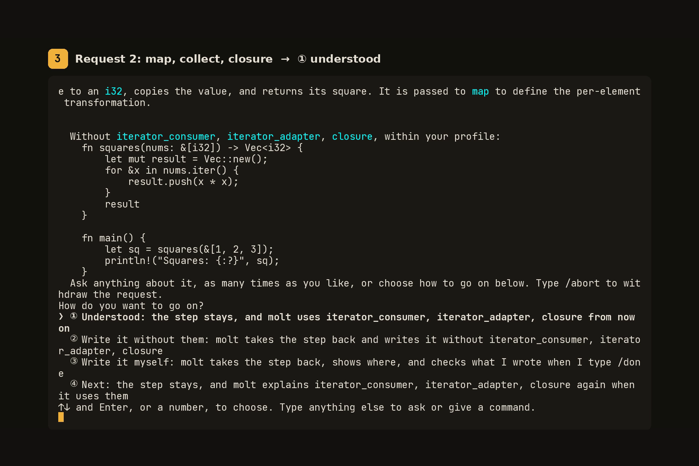
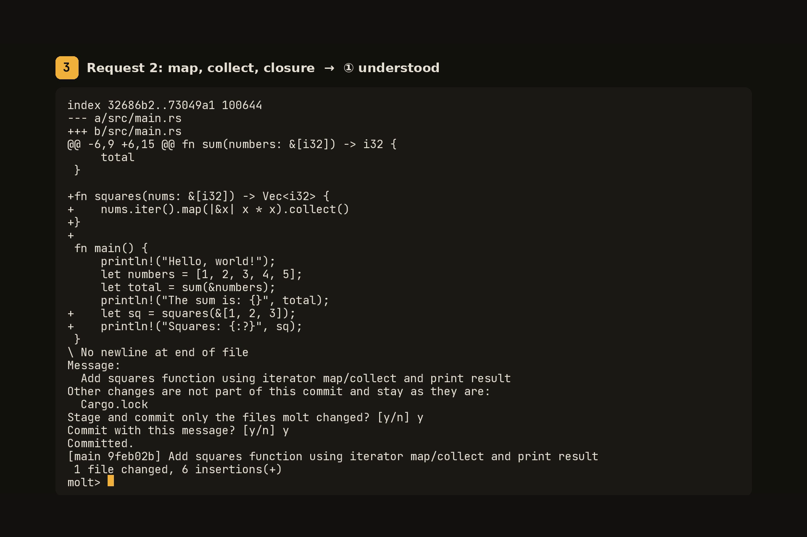

利用者が書いたことのある書き方はまとめて、まだ書いたことのない書き方は説明しながら 1 ステップずつ書く Rust コーディングエージェント。
Grow your Rust, one shell at a time.
molt という名前
カニは殻を脱ぎ捨てて大きくなる。これを脱皮（molt）という。Rust のマスコットはカニで、molt では理解の範囲が殻にあたり、使うほど広がる。
使い始める
molt doctor接続先と各モデルが何に対応しているかを確かめて記録する。
molt init書いたことのある Rust について尋ね、確認のあとプロファイルを保存する。
moltcargo のプロジェクトで、
molt>に依頼を打つ。
仕組み
molt は 2 本の線で動く。本線がコードを書く。プロファイルで known でない項目が要る書き込みは、小さなステップ（そうした項目は 3 つまで、変更は 30 行まで）として書き、直後に止まって副線を開く。
本線 · molt>
- 利用者が依頼を打つ
- 知っている書き方は、止まらずにまとめて書く
- 書いたことのない項目は小さなステップになり、境界で止まる
cargo checkが通ったら、利用者が承認したときだけ commit する
副線 · molt [sub: 項目]>
- ステップの行を示して解説する
- 同じ部分をプロファイルの範囲で書いたものを示す
- 質問に何度でも答える。質問は本線に入らない
- 利用者が ①〜④ から選ぶ
① 理解した
ステップは残り、項目が known になり、molt は以後それを使う。
② 使わずに書く
molt はステップを取り消し、その部分を項目を使わずに書き直す。
③ 自分で書く
molt はステップを取り消し、どこに何を書くかを示す。/done を打つと、molt が利用者の行を確かめてレビューする。
④ 次へ
ステップは残る。次にその項目を使うステップでも、短い解説とともに止まる。
画面


molt init は、書いたことのある書き方をカテゴリごとのタブで尋ねる。



.sum() の境界。解説、同じ部分をプロファイルの範囲で書いたもの、4 つの選択肢。

map・collect・クロージャを 1 つのステップで。

Nebius Token Factory の Nemotron
molt はリクエストを 3 つの役割のどれかに送り、要る大きさのモデルに届ける。既定は Nebius Token Factory の NVIDIA Nemotron 3 のモデルで、molt が頼る前に molt doctor がそれぞれの対応を確かめる。
light
molt init の答えを判定してプロファイルにし、② のあとの 1 行の方針を書く。
generate
ツールを通してコードを書き、② の書き直し、③ のレビュー、commit メッセージを書く。
reason
ステップを解説し、同じ部分をプロファイルの範囲で書き、③ を案内し、副線で答える。
既定のモデルと変え方: README
ハッカソン
molt は Nebius x NVIDIA Global AI Hackathon の Coding and Agentic Engineering トラックへの提出作。
インストール
molt は利用者のプロジェクトで cargo check を実行するため、Rust の toolchain（rustup）が要る。ビルド済みのバイナリは macOS（Apple silicon）と Linux（x86_64）の分が Release にある。README のとおりに molt を PATH に置き、API キーを NEBIUS_API_KEY に設定してから:
molt doctor
molt initREADME には、落とすコマンド、macOS の Gatekeeper が molt を止めたときの対処、ソースからのビルドもある。